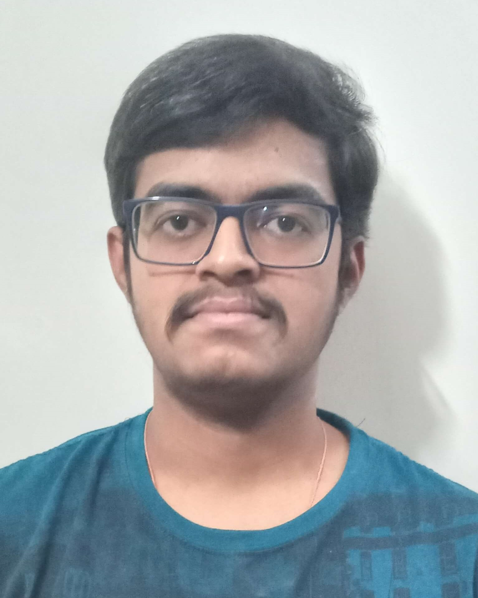

Karthik Avinash

Summary
I am a third-year Computer Science and Engineering student at the Indian Institute of Information Technology,
Dharwad, with a strong academic background, holding a CPI of 9.44. Leveraging my passion for technology, I have
completed impactful projects, including a heart disease prediction system and an innovative timetable automation
solution. My internship experiences, such as at iHUB DivyaSampark, IIT Roorkee, have equipped me with practical
skills in machine learning and AI. Actively engaged in extracurricular activities, I have served as a Technical
Content Creator for IRIS CLUB and am an active member of IEEE CS Branch. Noteworthy achievements include
generating optimized timetables for all semesters at IIIT Dharwad and securing Elite-Gold status in NPTEL's
"Problem Solving Through Programming in C" exam. Eager to contribute my skills and enthusiasm to challenging
projects in the field of computer science.
Education
- Indian Institute of Information Technology, Dharwad
- Bachelor of Technology in Computer Science and Engineering
- CPI: Confidential (2021 - 2025)
- Deeksha [Chetana PU College], Bangalore
- Senior Secondary, KSEAB
- Marks: 100% (2019 - 2021)
- Sandeepani Niketan English School, Bangalore
- SSLC, KSEAB
- Marks: 99.52% (2019)
Internships and Projects
- Machine Learning and AI Intern | iHUB DivyaSampark, IIT Roorkee | Summer 2023
- Developed a heart disease prediction system with 91% accuracy using Python, Tkinter, HTML, CSS,
sklearn, TensorFlow, Keras.
- Technical Content Creator | IRIS CLUB | Ongoing
- Conducted sessions on Arduino, Raspberry Pi, and Drones, contributing to technical enrichment.
- App Developer - 4epicure | Dr. Uma Sheshadri | Feb 2023 - May 2023
- Collaborated on a Recipe and Meals App using Flutter, Django, AWS, and NLP microservices.
- Time Table Automation Project | Dr. Vivekraj V K and Dr. Avantika Singh | Sep 2022 - Dec 2022
- Implemented a robust scheduling algorithm for efficient resource optimization.
- Indian Knowledge Systems Intern | Ongoing
- Contributed to pre-processing and data mining of ancient texts.
- Intrusion Detection System Project | Dr. Rajendra Hegadi | Aug 2023 - Sep 2023
- Developed an Intrusion Detection System achieving 95% accuracy using Python, Tkinter, Tableau, and
various models.
skills
- Programming Languages: Python, C
- Web Development: HTML, CSS, Django
- Mobile App Development: Flutter
- Data Analysis and Machine Learning: sklearn, TensorFlow, Keras
- Database Management: MySQL
- API Development and Testing: AWS, Rest API
- Data Visualization: Tableau
- Problem Solving: NPTEL Elite-Gold in "Problem Solving Through Programming in C"
- Soft Skills: Effective communication, teamwork, adaptability, time management
- Methodology: Agile methodology
- Intrusion Detection: UNSW-NB15 dataset, BotIOT dataset
- Version Control: Git, GitHub
Achievements
- Timetable Optimization at IIIT Dharwad:
- Generated optimized timetables for all semesters, demonstrating proficiency in resource utilization for classrooms, labs, faculty, and students.
- NPTEL Excellence:
- Achieved Elite-Gold status (top 2%) in the NPTEL exam for "Problem Solving Through Programming in C" and earned Elite status in the Database Management System (DBMS) course.
- High Accuracy in Heart Disease Prediction:
- Successfully developed a heart disease prediction system during the internship at iHUB DivyaSampark, IIT Roorkee, achieving an accuracy rate of 91%.
Other